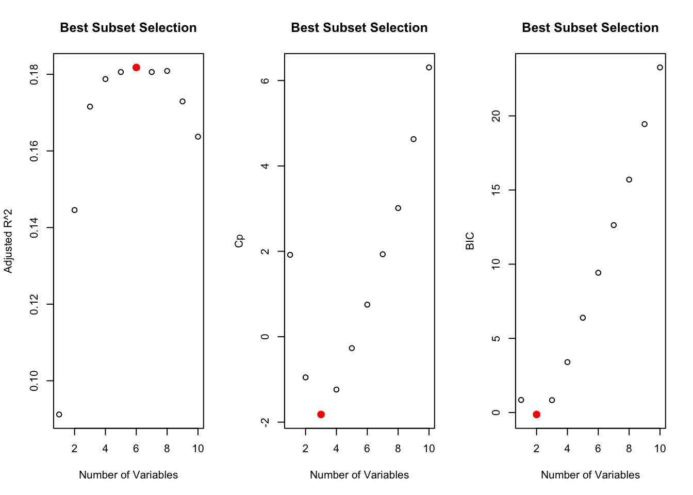
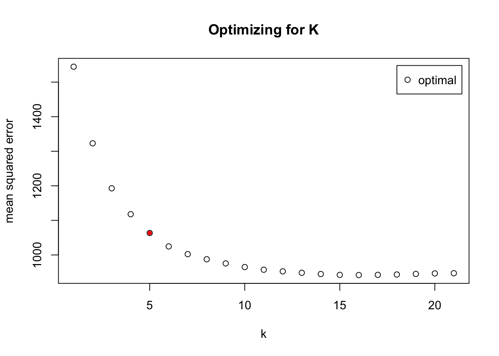

Data mining
Heather Hall
2015-08-05
Last updated: 2017-09-11
Code version: cf8449a
# Correlations between predictors
all.correlations = data.frame(matrix(ncol = 4, nrow = 1))
names(all.correlations) = c("term one", "term two", "correlation coefficient", "Bonferonni P-value")
# determine correlations
for(i in 1:ncol(predictors)){
for (j in 2:ncol(predictors)){
test <- cor.test(predictors[,i],predictors[,j])
p.value <- p.adjust(test$p.value, method="bonferroni", n = length(predictors)-1)
if (p.value < 0.05 & i != j){
new.row = data.frame(matrix(c(names(predictors)[i], names(predictors)[j], round(test$estimate, 2), signif(p.value, digits = 3)),
nrow = 1))
names(new.row) = c("term one", "term two", "correlation coefficient", "Bonferonni P-value")
all.correlations = rbind(all.correlations, new.row)
}
}
}correlation table
all.correlations = all.correlations[-1,]
strong.correlations = all.correlations[abs(as.numeric(all.correlations$`correlation coefficient`)) > 0.5,]
cor.results = data.frame(strong.correlations)
# plot the RMSE for comparison
grid.newpage()
table.plot = tableGrob(cor.results, rows = NULL)
table.plot <- gtable_add_grob(table.plot,
grobs = rectGrob(gp = gpar(fill = NA, lwd = 2)),
t = 2, b = nrow(table.plot), l = 1, r = ncol(table.plot))
table.plot <- gtable_add_grob(table.plot,
grobs = rectGrob(gp = gpar(fill = NA, lwd = 2)),
t = 1, l = 1, r = ncol(table.plot))
grid.draw(table.plot)
Format feature matrix
# scale the predictors and convert back to dataframe
response_predictors <- data.frame(scale(predictors))
# add the response column
response_predictors$glucoseChange <- cgm.meal.features$glucoseChangeDefine training and test sets
# define the training set to a random selection of 75% of the data
set.seed(1)
train = sample(1:nrow(response_predictors), nrow(response_predictors)*0.75)
test = (-train)
test.set = as.data.frame(response_predictors[test,])
train.set = as.data.frame(response_predictors[train,])
print(paste(c(nrow(test.set), " test samples, ", nrow(train.set), " training samples"), collapse = ""))[1] "83 test samples, 246 training samples"Linear Regression
Best subset selection
# 2 linear redundancies found so can only have ncol(response_predictors)- 2 maximum predictors
regfit.interaction <- regsubsets(glucoseChange~.+carbohydrates:grain+glycemicIndex:fruit+glycemicIndex:inulin+AM:banana+fruit:banana+banana:glycemicIndex+diversity:carbohydrates+diversity:inulin,
response_predictors, nvmax = ncol(response_predictors)-2)
Warning in leaps.setup(x, y, wt = wt, nbest = nbest, nvmax = nvmax,
force.in = force.in, : 2 linear dependencies found
Reordering variables and trying again:
reget.summary <- summary(regfit.interaction)
# Determine best set of variables
par(mfrow = c(1,3))
plot(reget.summary$adjr2, xlab = "Number of Variables", ylab = "Adjusted R^2", main = "Best Subset Selection")
points(which.max(reget.summary$adjr2), reget.summary$adjr2[which.max(reget.summary$adjr2)],
col = "red", cex = 2,pch = 20)
plot(reget.summary$cp, xlab = "Number of Variables", ylab = "Cp", main = "Best Subset Selection")
points(which.min(reget.summary$cp), reget.summary$cp[which.min(reget.summary$cp)],
col = "red", cex = 2,pch = 20)
plot(reget.summary$bic, xlab = "Number of Variables", ylab = "BIC", main = "Best Subset Selection")
points(which.min(reget.summary$bic), reget.summary$bic[which.min(reget.summary$bic)],
col = "red", cex = 2,pch = 20)
# determine which features to use
print(names(coef(regfit.interaction,which.min(reget.summary$cp)))[-1])
[1] "timeChange" "AM" "inulin"
[4] "wine" "glycemicIndex:fruit" "glycemicIndex:inulin"Linear regression model
lm = lm(glucoseChange~AM+fruit+last_meal_TIME+diversity+inulin:diversity, data = response_predictors, subset = train)
summary_lm <- summary(lm)
print(summary_lm)
Call:
lm(formula = glucoseChange ~ AM + fruit + last_meal_TIME + diversity +
inulin:diversity, data = response_predictors, subset = train)
Residuals:
Min 1Q Median 3Q Max
-106.961 -8.059 -6.308 -4.575 126.690
Coefficients:
Estimate Std. Error t value Pr(>|t|)
(Intercept) 7.3258 1.9570 3.743 0.000227 ***
AM -2.0618 2.3356 -0.883 0.378245
fruit -0.5211 2.4109 -0.216 0.829061
last_meal_TIME 5.0395 2.3948 2.104 0.036384 *
diversity 2.0441 2.3334 0.876 0.381897
diversity:inulin -0.5647 1.4259 -0.396 0.692417
---
Signif. codes: 0 '***' 0.001 '**' 0.01 '*' 0.05 '.' 0.1 ' ' 1
Residual standard error: 30.44 on 240 degrees of freedom
Multiple R-squared: 0.02286, Adjusted R-squared: 0.002501
F-statistic: 1.123 on 5 and 240 DF, p-value: 0.3488LOOCV to determine RMSE
set.seed(1)
avg.AdjR2.lm = 0
avg.RMSE.lm = 0
for (i in 1:nrow(response_predictors)){
test = i
train = -i
lm = lm(glucoseChange~AM+fruit+last_meal_TIME+diversity+inulin:diversity, data = response_predictors , subset = train)
summary_lm <- summary(lm)
pred.lm <- predict(lm,response_predictors[test,])
MSE.lm <- mean((pred.lm - response_predictors[test,]$glucoseChange)^2)
RMSE <- sqrt(MSE.lm)
avg.RMSE.lm = avg.RMSE.lm + RMSE
avg.AdjR2.lm = avg.AdjR2.lm + summary_lm$adj.r.squared
}
LM.RMSE = round(avg.RMSE.lm/nrow(response_predictors),2)
print(paste("LOOCV RMSE LM:",LM.RMSE) )
[1] "LOOCV RMSE LM: 15.4"K-nearest Neighbor
## LOOCV cross validation
set.seed(0)
CV.kknn.interactions <- train.kknn(glucoseChange~.+carbohydrates:grain+glycemicIndex:fruit+glycemicIndex:inulin+AM:banana+fruit:banana+banana:glycemicIndex+diversity:carbohydrates+diversity:inulin, response_predictors, distance = 2, kmax = 21, kernel = "optimal")
# plot MSE and elbow method to determine K
par(mfrow = c(1,1))
plot(CV.kknn.interactions, main = "Optimizing for K") #, xlab = "Numnber of Clusters",ylab = "RSE")
number.clusters = 5
points(number.clusters, CV.kknn.interactions$MEAN.SQU[number.clusters], col = "red", pch = 20)
# print RMSE for LOOCV
knn.RMSE = round(sqrt(CV.kknn.interactions$MEAN.SQU[number.clusters]), 2)
print(paste("LOOCV KNN RMSE:", knn.RMSE))[1] "LOOCV KNN RMSE: 31.65"Random Forest
## calculate the average RSE for Leave out out
set.seed(1)
avg.RMSE.RF = 0
avg.importance = rep(0,ncol(response_predictors)-1)
for(i in 1:nrow(response_predictors)){
train = -i
test = i
test.set =
RF.glucoseChange = randomForest(glucoseChange~.+carbohydrates:grain+glycemicIndex:fruit+glycemicIndex:inulin+AM:banana+fruit:banana+banana:glycemicIndex+diversity:carbohydrates+diversity:inulin,
data = response_predictors, subset = train, mtry = sqrt(ncol(response_predictors)-1), importance = TRUE)
# calculate MSE
pred.RF = predict(RF.glucoseChange ,newdata=response_predictors[test,])
MSE.RF <- mean((pred.RF-response_predictors[test,]$glucoseChange)^2)
RMSE = sqrt(MSE.RF)
avg.RMSE.RF = avg.RMSE.RF + RMSE
avg.importance = avg.importance + importance(RF.glucoseChange)[,1]
}
RF.RMSE = round(avg.RMSE.RF/nrow(response_predictors),2)
print(paste("Avg RMSE Random Forest:",RF.RMSE ))variable importance RF
# set up dataset
variable.decrease = data.frame(variable = names(avg.importance), mean.decrease = avg.importance/nrow(response_predictors))
variable.order = variable.decrease[order(variable.decrease$mean.decrease), ]$variable
# plot decrease in accuracy
ggplot(variable.decrease) +
aes(y = mean.decrease, x = factor(variable, levels = variable.order)) +
geom_bar(stat = "identity", fill = "blue") +
coord_flip() +
labs(x = "variable name", y = "mean decrease in accuracy when left out of bag")
# plot variable importance plots
varImpPlot(RF.glucoseChange,main = "Variable Importance for Random Forest")
Boosting
optimize tuning parameter
set.seed(1)
train = sample(1:nrow(response_predictors), nrow(response_predictors)*0.75)
test = (-train)
minLambda = 7
minRMSE = 100
for (lambda in seq(0.000,0.005,0.001)){
boost.glucoseChange <- gbm(glucoseChange~.+carbohydrates:grain+glycemicIndex:fruit+glycemicIndex:inulin+AM:banana+fruit:banana+banana:glycemicIndex+diversity:carbohydrates+diversity:inulin,
data = response_predictors[train,], distribution = "gaussian",
n.trees = 5000, interaction.depth = 4,
verbose = F,shrinkage = lambda)
pred.boost <- predict(boost.glucoseChange, newdata = response_predictors[test,], n.trees = 5000)
RMSE.boost <- sqrt(mean((pred.boost-response_predictors[test,]$glucoseChange)^2))
if (RMSE.boost < minRMSE){
# print(c("lambda",lambda,"MSE",RMSE.boost,minRMSE))
minLambda = lambda
minRMSE = RMSE.boost
}
}
print(paste("best tuning parameter:", minLambda))optimize number of trees
numTrees = seq(0,20000,5000)
tree_RMSE = rep(0, length(numTrees))
i = 1
for (trees in numTrees){
## Find the model using all predictors to make plots
boost.glucoseChange <- gbm(glucoseChange~.+carbohydrates:grain+glycemicIndex:fruit+glycemicIndex:inulin+AM:banana+fruit:banana+banana:glycemicIndex+diversity:carbohydrates+diversity:inulin,
data = response_predictors, distribution = "gaussian",
n.trees = trees, interaction.depth = 4,
verbose = F, shrinkage = minLambda)
pred.boost <- predict(boost.glucoseChange, newdata = response_predictors[test,], n.trees = trees)
tree_RMSE[i] <- sqrt(mean((pred.boost-response_predictors[test,]$glucoseChange)^2))
i = i + 1
}
# effect of number of trees
par(mfrow = c(1,1))
plot(numTrees,tree_RMSE, main = "Effect of Boosting with more Trees", ylab = "RMSE", xlab = "Number of Trees", pch = 16)
# lines(numTrees,tree_RMSE)plot relative importance
# relative importance of factors
boost.summary = summary(boost.glucoseChange, plotit = F)
ggplot(boost.summary) +
aes(x = factor(var, levels = rev(boost.summary$var)),
y = rel.inf) +
geom_bar(stat="identity", fill = "blue") +
labs(x = "model feature", y = "relative importance") +
coord_flip()
plot marginal effects
par(mfrow = c(2,2))
plot(boost.glucoseChange, i = "timeChange")
plot(boost.glucoseChange, i = "last_meal_TIME")
plot(boost.glucoseChange, i = "carbohydrates")
plot(boost.glucoseChange, i = "glycemicIndex")
LOOCV to determine RMSE
avg.RMSE.boost = 0
for (i in 1:nrow(response_predictors)) {
test = i
train = -i
## Find the model using all predictors to make plots
boost.glucoseChange <- gbm(glucoseChange ~ . + carbohydrates:grain + glycemicIndex:fruit +
glycemicIndex:inulin + AM:banana + fruit:banana + banana:glycemicIndex +
diversity:carbohydrates + diversity:inulin, data = response_predictors[train,
], distribution = "gaussian", n.trees = 5000, interaction.depth = 4,
verbose = F, shrinkage = minLambda)
pred.boost <- predict(boost.glucoseChange, newdata = response_predictors[test,
], n.trees = 5000)
MSE.boost <- mean((pred.boost - response_predictors[test, ]$glucoseChange)^2)
RMSE.boost = sqrt(MSE.boost)
avg.RMSE.boost = avg.RMSE.boost + RMSE.boost
}
boosting.RMSE = round(avg.RMSE.boost/nrow(response_predictors), 2)
print(paste("Average RMSE for Boosting: ", boosting.RMSE))LOOCV RMSE Results
RMSE.results = data.frame(model = c("linear regression", "k-nearest neighbor (k = 5)",
"random forest", "boosting random forest"),
RMSE = c(LM.RMSE, knn.RMSE, RF.RMSE, boosting.RMSE))
RMSE.results$`percent error` = round(RMSE.results$RMSE/mean(response_predictors$glucoseChange)*100,1)
# plot the RMSE for comparison
grid.newpage()
table.plot = tableGrob(RMSE.results, rows = NULL)
table.plot <- gtable_add_grob(table.plot,
grobs = rectGrob(gp = gpar(fill = NA, lwd = 2)),
t = 2, b = nrow(table.plot), l = 1, r = ncol(table.plot))
table.plot <- gtable_add_grob(table.plot,
grobs = rectGrob(gp = gpar(fill = NA, lwd = 2)),
t = 1, l = 1, r = ncol(table.plot))
grid.draw(table.plot)Session information
sessionInfo()R version 3.3.3 (2017-03-06)
Platform: x86_64-apple-darwin13.4.0 (64-bit)
Running under: OS X El Capitan 10.11.6
locale:
[1] en_US.UTF-8/en_US.UTF-8/en_US.UTF-8/C/en_US.UTF-8/en_US.UTF-8
attached base packages:
[1] grid parallel splines stats graphics grDevices utils
[8] datasets methods base
other attached packages:
[1] ggplot2_2.2.1 gtable_0.2.0 gridExtra_2.2.1
[4] randomForest_4.6-12 gbm_2.1.3 lattice_0.20-35
[7] survival_2.41-3 kknn_1.3.1 leaps_3.0
[10] lubridate_1.6.0
loaded via a namespace (and not attached):
[1] igraph_1.0.1 Rcpp_0.12.10 knitr_1.17 magrittr_1.5
[5] munsell_0.4.3 colorspace_1.3-2 plyr_1.8.4 stringr_1.2.0
[9] tools_3.3.3 git2r_0.19.0 htmltools_0.3.5 lazyeval_0.2.0
[13] yaml_2.1.14 rprojroot_1.2 digest_0.6.12 tibble_1.3.0
[17] Matrix_1.2-8 formatR_1.4 evaluate_0.10.1 rmarkdown_1.6
[21] stringi_1.1.5 scales_0.4.1 backports_1.0.5 This R Markdown site was created with workflowr